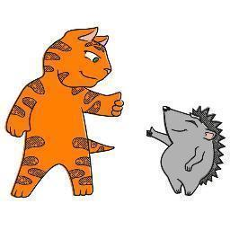

ufuisdf sduf suyfiusdufuisdf sduf suyfiusdufuisdf sduf suyfiusdufuisdf sduf suyfiusdufuisdf sduf suyfiusd ufuisdf sduf suyfiusdufuisdf sduf suyfiusdufuisdf sduf suyfiusdufuisdf sduf suyfiusdufuisdf sduf suyfiusdufuisdf sduf suyfiusd ufuisdf sduf suyfiusdufuisdf sduf suyfiusdufuisdf sduf suyfiusdufuisdf sduf suyfiusdufuisdf sduf suyfiusd ufuisdf sduf suyfiusdufuisdf sduf suyfiusdufuisdf sduf suyfiusdufuisdf sduf suyfiusdufuisdf sduf suyfiusdufuisdf sduf suyfiusd ufuisdf sduf suyfiusdufuisdf sduf suyfiusdufuisdf sduf suyfiusdufuisdf sduf suyfiusdufuisdf sduf suyfiusdufuisdf sduf suyfiusd